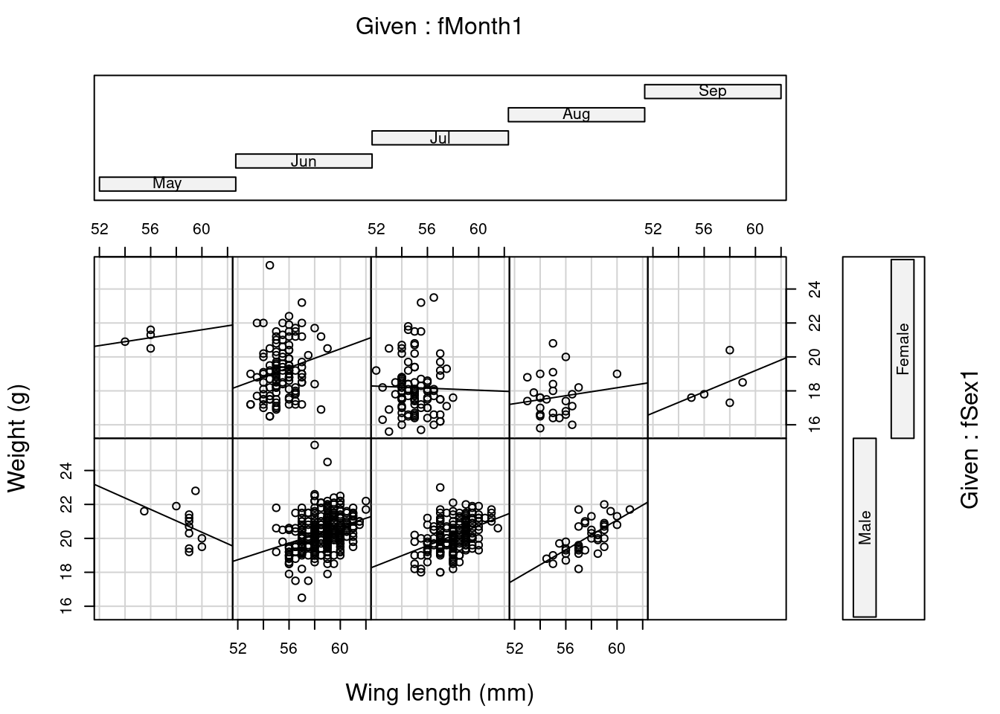

# Necessary packages from original code
library(lattice)
# Other additionnal packages to improve upon the provided code
library(here)
library(ggplot2)
library(dplyr)
library(tidyr)Zuur, Ieno & Elphick’s 10 steps for data exploration
This page is a reproducible exploration of “A protocol for data exploration to avoid common statistical problems” by Alain F. Zuur, Elena N. Ieno and Chris S. Elphick.
The 10 steps are all first presented in figure 1 of the paper:

In this paper, the authors first warn against “data dredging”, which is when the patterns explored and discovered during data exploration influence data analysis unhealthily. Modeling and testing decisions should be determined a priori, using knowledge of the system and not a posteriori after exploration of the data. When understanding is limited, we can use exploration to help generate hypotheses, but that is fundamentally different from the principled workflow of this paper. Then, the authors warn against certain tests and visual tools, including normality tests.
Accessing data and code for reproducibility
Let’s first load the relevant packages for this analysis.
Unlike in the more recent 2016 paper, the data here is only accessible via a zip archive on the paper webpage. Download the archive to data/archive and extract it to data/zuur_ieno_elphick_2010.
Again, the authors provide custom functions that need to be sourced. Like in the 2016 paper, they suggest about that code that “It is perhaps better not to try and understand what it all does”…
source(here("data", "zuur_ieno_elphick_2010", "HighstatLib.r"))Let’s also load the datasets while we are at it.
Sparrows <- read.table(file = here("data", "zuur_ieno_elphick_2010", "SparrowsElphick.txt"), header = TRUE)
Godwits <- read.table(file = here("data", "zuur_ieno_elphick_2010", "Godwits.txt"), header = TRUE)
RiceField <- read.table(file = here("data", "zuur_ieno_elphick_2010", "ElphickBirdData.txt"), header = TRUE)
Sparrows2 <- read.table(file = here("data", "zuur_ieno_elphick_2010", "VegSamplesV1.txt"), header = TRUE)
Waders <- read.table(file = here("data", "zuur_ieno_elphick_2010", "wader.txt"), header = TRUE)Step 1: Formulate hypotheses, carry out experiments and data collection
See the other page on this website for an example in the case of regression analyses.
Step 2: Are there outliers in Y and X?
It is important to know how your modeling technique of choice handles outliers in the data. The authors suggest to plot the data as a first way to look at potential outliers. They also suggest simple Cleveland dot plots.
ggplot(Sparrows) +
geom_boxplot(aes(y = wingcrd)) +
labs(y = "Wing length (mm)") +
theme_bw()ggplot(Sparrows) +
geom_point(aes(x = wingcrd, y = 1:nrow(Sparrows))) +
labs(x = "Wing length (mm)",
y = "Order of the data") +
theme_bw()names_df <- data.frame(
name = c("wingcrd", "tarsus", "head", "culmen", "nalospi", "wt"),
titles = c("wing length", "tarsus length", "head length",
"culmen length", "nalospi to bill tip", "weight")
)
Sparrows |>
pivot_longer(cols = c(wingcrd, tarsus, head, culmen, nalospi, wt)) |>
left_join(names_df) |>
ggplot() +
geom_point(aes(x = value, y = rep(1:nrow(Sparrows), each = 6))) +
facet_wrap(~ titles, scales = "free") +
labs(x = "Value of the variable",
y = "Order of the data") +
theme_bw()Joining with `by = join_by(name)`The authors discuss the thorny topic of outlier removal and enjoin the reader to think of outlier not necessarily as points that seems out of the ordinary distribution of the data but as observations that would exert undue influence on the analysis. They also suggest using distributions better able to deal with outlier data, or more able metrics of distance for multivariate analysis.
Step 3: Do we have homogeneity of variance?
The authors include a small section on checking equality of variance. Small deviations are okay, but larger variations can be problematic and should be addressed if possible. The authors point out to papers with more extreme examples. In the dataset plotted below, the differences in variance are negligible according to the authors.
Godwits |>
mutate(sex = ifelse(SEX == 0, "Not",
ifelse(SEX == 1, "Female", "Male"))) |>
mutate(period = ifelse(PERIOD == 0, "Summer",
ifelse(PERIOD == 1, "Pre-migration", "Winter"))) |>
filter(sex != "Not") |>
ggplot() +
geom_boxplot(aes(y = mgconsumed, x = period)) +
facet_wrap(~ sex, scales = "free") +
labs(x = "Migration period", y = "Intake rate") +
theme_bw()Step 4: Are the data normally distributed?
Different methods will make different assumptions about normality. For example in regression, the residual error is expected to be normally distributed, and in general, this assumption is more relevant for individual data point predictions than overall fit. The authors also warn against the fact that even if the data is properly distributed, others issues such as skewness can creep up, like in the figure below.
months_df <- data.frame(
Month = c(5, 6, 7, 8, 9, 10),
Monthlabel = c("May", "June", "July", "August",
"Sept.", "Oct.")
)
Sparrows_mod <- Sparrows |>
left_join(months_df) |>
filter(Month %in% 6:8)
Sparrows_mod |>
ggplot() +
geom_histogram(aes(x = wt)) +
labs(x = "Weight (g)", y = "Frequency") +
theme_bw()Sparrows_mod |>
ggplot() +
geom_histogram(aes(x = wt)) +
labs(x = "Weight (g)", y = "Frequency") +
facet_grid(rows = "Monthlabel") +
theme_bw()Step 5: Are there lots of zeros in the data?
The authors suggest considering the prevalence of zeroes in the dataset and what it means for the method that is best to use. In regression models, that might mean using zero inflated models and for multivariate methods it means considering what true zeroes are and think more clearly about joint absences.
The plot belows shows the prevalence of zeroes in a dataset (718 of 2035 observations equal zero).
RiceField |>
mutate(bird_var = round(AREA * AQBIRDS)) |>
ggplot() +
geom_histogram(aes(x = bird_var)) +
labs(x = "Observed values", y = "Frequency") +
theme_bw()In the same dataset, the amount of co-absences is high. The figure is difficult to update to ggplot2 so I kept it in base R. Unfortunately the code provided by the authors fail to reproduce the figure correctly.
#Figure 8
#These are all the species
AllS <- c(
"TUSW", "GWFG", "WHGO", "CAGO", "MALL",
"GADW", "GWTE", "CITE", "UNTE", "AMWI", "NOPI",
"NOSH", "RIDU", "CANV", "BUFF", "WODU", "RUDU",
"EUWI", "UNDU", "PBGB", "SORA", "COOT", "COMO",
"AMBI", "BCNH", "GBHE", "SNEG", "GREG", "WFIB",
"SACR", "AMAV", "BNST", "BBPL", "KILL", "LBCU",
"GRYE", "LEYE", "LBDO", "SNIP", "DUNL", "WESA",
"LESA", "PEEP", "RUFF", "UNSH", "RBGU", "HEGU",
"CAGU", "GUSP")
#Determine species richness
Richness <- colSums(RiceField[,AllS] > 0, na.rm = TRUE)
#Remove all covariates
Birds <- RiceField[,AllS]
#To reduce the of variables in the figure, we only used the
#20 species that occured at more than 40 sites.
#As a result, N = 20. Else it becomes a mess.
Birds2 <- Birds[, Richness > 40]
N <- ncol(Birds2)
AllNames <- names(Birds2)
A <- matrix(nrow = N, ncol = N)
for (i in 1:N){
for (j in 1:N){
A[i,j] <- sum(RiceField[,AllS[i]]==0 & RiceField[,AllS[j]]==0, na.rm=TRUE)
}}
A1 <- A/2035
# print(A1, digits = 2)
rownames(A1) <- AllNames
colnames(A1) <- AllNames
panel.corrgram.2 <- function(x, y, z, subscripts, at = pretty(z), scale = 0.8, ...)
{
require("grid", quietly = TRUE)
x <- as.numeric(x)[subscripts]
y <- as.numeric(y)[subscripts]
z <- as.numeric(z)[subscripts]
zcol <- level.colors(z, at = at, ...)
for (i in seq(along = z))
{
lims <- range(0, z[i])
tval <- 2 * base::pi *
seq(from = lims[1], to = lims[2], by = 0.01)
grid.polygon(x = x[i] + .5 * scale * c(0, sin(tval)),
y = y[i] + .5 * scale * c(0, cos(tval)),
default.units = "native",
gp = gpar(fill = zcol[i]))
grid.circle(x = x[i], y = y[i], r = .5 * scale,
default.units = "native")
}
}
levelplot(A1,xlab=NULL,ylab=NULL,
at=do.breaks(c(0.5,1.01),101),
panel=panel.corrgram.2,
scales=list(x=list(rot=90)),
colorkey=list(space="top"),
col.regions=colorRampPalette(c("red","white","blue")))#Grey colours
# levelplot(A1,xlab=NULL,ylab=NULL,
# at=do.breaks(c(0.5,1.01),101),
# panel=panel.corrgram.2,
# scales=list(x=list(rot=90)),
# colorkey=list(space="top"),
# col.regions=colorRampPalette(c(grey(0.8),grey(0.5),grey(0.2))))Step 6: Is there collinearity among the covariates?
I’ve read elsewhere, namely in statistiscal rethinking and here, that multicolinearity is rarely dealt with in a causal thinking kind of way. Here the authors show an example of a “causal salad” of parameters, where model selection turns into dropping non colinear, then non significant variables ; this certainly supports McElreath’s musings here. From what I gather, dropping colinear variables probably only makes sense if it also makes sense in the context of your causal model.
To be returned to when I’ve understood more about all this.
Step 7: What are the relationships between Y and X variables?
This seems like another example of histomancy (again, re: rethinking): trying to divine a modelling approach from plotting variables against each other.
Z<-Sparrows2[,c("Avgmaxht", "Avgdens", "ht.thatch",
"S.patens", "Distichlis", "S.alternifloraShort",
"S.alternifloraTall", "Juncus", "Bare", "Other",
"Phragmites", "Shrub", "Tallsedge", "Water")]
corvif(Z) #Part of Table 1Correlations of the variables
Avgmaxht Avgdens ht.thatch S.patens
Avgmaxht 1.00000000 -0.22841524 0.466218046 -0.17785017
Avgdens -0.22841524 1.00000000 0.062575238 0.67411203
ht.thatch 0.46621805 0.06257524 1.000000000 0.16053731
S.patens -0.17785017 0.67411203 0.160537307 1.00000000
Distichlis -0.02337749 0.13160006 0.022321660 -0.10290139
S.alternifloraShort -0.44042742 -0.35875821 -0.401407857 -0.41441467
S.alternifloraTall 0.60074164 -0.51803067 0.254760430 -0.55521017
Juncus 0.17293819 0.32490496 -0.003660471 0.03727048
Bare -0.23941028 -0.20344863 -0.155596279 -0.05769548
Other -0.36157539 0.13420907 -0.194936964 0.06081853
Phragmites 0.38995648 -0.06910767 0.330766492 0.08310766
Shrub -0.07595686 -0.19996137 -0.141009710 -0.16031227
Tallsedge 0.28552986 -0.07218760 -0.066039061 0.07970131
Water -0.25038911 -0.12840907 -0.120468982 -0.17287729
Distichlis S.alternifloraShort S.alternifloraTall
Avgmaxht -0.02337749 -0.44042742 0.600741637
Avgdens 0.13160006 -0.35875821 -0.518030668
ht.thatch 0.02232166 -0.40140786 0.254760430
S.patens -0.10290139 -0.41441467 -0.555210170
Distichlis 1.00000000 -0.17327011 -0.219076843
S.alternifloraShort -0.17327011 1.00000000 -0.156590051
S.alternifloraTall -0.21907684 -0.15659005 1.000000000
Juncus 0.04757495 -0.31812489 -0.231319555
Bare -0.24631400 -0.03848335 -0.012422149
Other -0.12816334 0.08430546 -0.201525783
Phragmites 0.08813589 -0.32519571 0.027006156
Shrub 0.21464963 0.16155126 -0.173082116
Tallsedge -0.09316033 -0.15043833 -0.050009373
Water -0.21243584 0.06676282 0.002440565
Juncus Bare Other Phragmites
Avgmaxht 0.172938189 -0.23941028 -0.36157539 0.38995648
Avgdens 0.324904964 -0.20344863 0.13420907 -0.06910767
ht.thatch -0.003660471 -0.15559628 -0.19493696 0.33076649
S.patens 0.037270482 -0.05769548 0.06081853 0.08310766
Distichlis 0.047574949 -0.24631400 -0.12816334 0.08813589
S.alternifloraShort -0.318124889 -0.03848335 0.08430546 -0.32519571
S.alternifloraTall -0.231319555 -0.01242215 -0.20152578 0.02700616
Juncus 1.000000000 -0.14345423 -0.11858986 0.08711016
Bare -0.143454233 1.00000000 0.18374555 -0.05895322
Other -0.118589860 0.18374555 1.00000000 -0.12488041
Phragmites 0.087110160 -0.05895322 -0.12488041 1.00000000
Shrub 0.045112426 -0.09935402 0.02376765 0.09161061
Tallsedge -0.070738224 0.14131312 0.26940954 0.09853599
Water -0.124503346 0.12718566 -0.07270756 -0.11213772
Shrub Tallsedge Water
Avgmaxht -0.07595686 0.28552986 -0.250389111
Avgdens -0.19996137 -0.07218760 -0.128409073
ht.thatch -0.14100971 -0.06603906 -0.120468982
S.patens -0.16031227 0.07970131 -0.172877290
Distichlis 0.21464963 -0.09316033 -0.212435845
S.alternifloraShort 0.16155126 -0.15043833 0.066762825
S.alternifloraTall -0.17308212 -0.05000937 0.002440565
Juncus 0.04511243 -0.07073822 -0.124503346
Bare -0.09935402 0.14131312 0.127185661
Other 0.02376765 0.26940954 -0.072707562
Phragmites 0.09161061 0.09853599 -0.112137724
Shrub 1.00000000 -0.04012283 -0.098725195
Tallsedge -0.04012283 1.00000000 -0.059059880
Water -0.09872519 -0.05905988 1.000000000
Variance inflation factorsWarning in summary.lm(object, ...): essentially perfect fit: summary may be
unreliable GVIF
Avgmaxht 6.120018
Avgdens 3.206401
ht.thatch 1.671224
S.patens 159.350658
Distichlis 53.754540
S.alternifloraShort 121.463782
S.alternifloraTall 159.382860
Juncus 44.995377
Bare 12.058665
Other 5.817015
Phragmites 3.749027
Shrub 2.781804
Tallsedge 4.409398
Water 17.067777#Run linear regression
M1<-lm(Banded~Avgmaxht + Avgdens + ht.thatch + S.patens +
Distichlis + S.alternifloraShort + S.alternifloraTall +
Juncus + Bare + Other + Phragmites + Shrub + Tallsedge +
Water, data = Sparrows2)
summary(M1) #Part of Table 1
Call:
lm(formula = Banded ~ Avgmaxht + Avgdens + ht.thatch + S.patens +
Distichlis + S.alternifloraShort + S.alternifloraTall + Juncus +
Bare + Other + Phragmites + Shrub + Tallsedge + Water, data = Sparrows2)
Residuals:
Min 1Q Median 3Q Max
-19.142 -5.431 1.011 5.240 18.634
Coefficients:
Estimate Std. Error t value Pr(>|t|)
(Intercept) -1.612e+02 8.780e+01 -1.836 0.0730 .
Avgmaxht 4.195e-01 3.548e-01 1.183 0.2432
Avgdens 6.158e-02 1.719e-01 0.358 0.7219
ht.thatch 8.427e-04 6.241e-01 0.001 0.9989
S.patens 1.626e+00 8.562e-01 1.899 0.0640 .
Distichlis 1.703e+00 8.558e-01 1.990 0.0527 .
S.alternifloraShort 1.668e+00 8.462e-01 1.971 0.0549 .
S.alternifloraTall 1.449e+00 8.521e-01 1.700 0.0960 .
Juncus 2.009e+00 8.354e-01 2.405 0.0203 *
Bare 1.620e+00 8.615e-01 1.880 0.0666 .
Other 1.800e+00 9.807e-01 1.836 0.0730 .
Phragmites 1.851e+00 1.003e+00 1.846 0.0715 .
Shrub 6.300e-02 1.248e+00 0.050 0.9600
Tallsedge 1.471e+00 1.172e+00 1.255 0.2160
Water 2.092e+00 1.070e+00 1.955 0.0568 .
---
Signif. codes: 0 '***' 0.001 '**' 0.01 '*' 0.05 '.' 0.1 ' ' 1
Residual standard error: 10.45 on 45 degrees of freedom
Multiple R-squared: 0.393, Adjusted R-squared: 0.2041
F-statistic: 2.081 on 14 and 45 DF, p-value: 0.03214#Chop out covariates
Z<-Sparrows2[,c("ht.thatch", "S.patens", "Distichlis",
"S.alternifloraShort", "Juncus", "Bare", "Other",
"Phragmites", "Shrub", "Tallsedge", "Water")]
corvif(Z) #Part of Table 1Correlations of the variables
ht.thatch S.patens Distichlis S.alternifloraShort
ht.thatch 1.000000000 0.16053731 0.02232166 -0.40140786
S.patens 0.160537307 1.00000000 -0.10290139 -0.41441467
Distichlis 0.022321660 -0.10290139 1.00000000 -0.17327011
S.alternifloraShort -0.401407857 -0.41441467 -0.17327011 1.00000000
Juncus -0.003660471 0.03727048 0.04757495 -0.31812489
Bare -0.155596279 -0.05769548 -0.24631400 -0.03848335
Other -0.194936964 0.06081853 -0.12816334 0.08430546
Phragmites 0.330766492 0.08310766 0.08813589 -0.32519571
Shrub -0.141009710 -0.16031227 0.21464963 0.16155126
Tallsedge -0.066039061 0.07970131 -0.09316033 -0.15043833
Water -0.120468982 -0.17287729 -0.21243584 0.06676282
Juncus Bare Other Phragmites
ht.thatch -0.003660471 -0.15559628 -0.19493696 0.33076649
S.patens 0.037270482 -0.05769548 0.06081853 0.08310766
Distichlis 0.047574949 -0.24631400 -0.12816334 0.08813589
S.alternifloraShort -0.318124889 -0.03848335 0.08430546 -0.32519571
Juncus 1.000000000 -0.14345423 -0.11858986 0.08711016
Bare -0.143454233 1.00000000 0.18374555 -0.05895322
Other -0.118589860 0.18374555 1.00000000 -0.12488041
Phragmites 0.087110160 -0.05895322 -0.12488041 1.00000000
Shrub 0.045112426 -0.09935402 0.02376765 0.09161061
Tallsedge -0.070738224 0.14131312 0.26940954 0.09853599
Water -0.124503346 0.12718566 -0.07270756 -0.11213772
Shrub Tallsedge Water
ht.thatch -0.14100971 -0.06603906 -0.12046898
S.patens -0.16031227 0.07970131 -0.17287729
Distichlis 0.21464963 -0.09316033 -0.21243584
S.alternifloraShort 0.16155126 -0.15043833 0.06676282
Juncus 0.04511243 -0.07073822 -0.12450335
Bare -0.09935402 0.14131312 0.12718566
Other 0.02376765 0.26940954 -0.07270756
Phragmites 0.09161061 0.09853599 -0.11213772
Shrub 1.00000000 -0.04012283 -0.09872519
Tallsedge -0.04012283 1.00000000 -0.05905988
Water -0.09872519 -0.05905988 1.00000000
Variance inflation factorsWarning in summary.lm(object, ...): essentially perfect fit: summary may be
unreliable GVIF
ht.thatch 1.483803
S.patens 1.405993
Distichlis 1.355857
S.alternifloraShort 2.131070
Juncus 1.300832
Bare 1.231097
Other 1.189983
Phragmites 1.250227
Shrub 1.156870
Tallsedge 1.182988
Water 1.186686#Linear regression on subset
M2 <- lm(Banded ~ ht.thatch + S.patens +
Distichlis + S.alternifloraShort +
Juncus + Bare + Other + Phragmites + Shrub + Tallsedge +
Water, data = Sparrows2)
summary(M2) #Part of Table 1
Call:
lm(formula = Banded ~ ht.thatch + S.patens + Distichlis + S.alternifloraShort +
Juncus + Bare + Other + Phragmites + Shrub + Tallsedge +
Water, data = Sparrows2)
Residuals:
Min 1Q Median 3Q Max
-19.1448 -6.3075 0.4815 7.2374 20.0593
Coefficients:
Estimate Std. Error t value Pr(>|t|)
(Intercept) 9.93887 8.38424 1.185 0.241685
ht.thatch 0.13163 0.59680 0.221 0.826366
S.patens 0.08011 0.08162 0.982 0.331243
Distichlis 0.15929 0.13794 1.155 0.253875
S.alternifloraShort 0.12045 0.11375 1.059 0.294972
Juncus 0.59087 0.14415 4.099 0.000159 ***
Bare 0.03854 0.27935 0.138 0.890862
Other 0.03050 0.45018 0.068 0.946264
Phragmites 0.65102 0.58768 1.108 0.273473
Shrub -1.59457 0.81712 -1.951 0.056853 .
Tallsedge 0.48892 0.61606 0.794 0.431324
Water 0.11326 0.28638 0.395 0.694233
---
Signif. codes: 0 '***' 0.001 '**' 0.01 '*' 0.05 '.' 0.1 ' ' 1
Residual standard error: 10.61 on 48 degrees of freedom
Multiple R-squared: 0.3331, Adjusted R-squared: 0.1802
F-statistic: 2.179 on 11 and 48 DF, p-value: 0.03169M2 <- lm(Banded ~ Juncus + Shrub, data = Sparrows2)
drop1(M2, test = "F")Single term deletions
Model:
Banded ~ Juncus + Shrub
Df Sum of Sq RSS AIC F value Pr(>F)
<none> 5815.2 280.43
Juncus 1 2015.82 7831.0 296.29 19.7589 4.11e-05 ***
Shrub 1 341.07 6156.3 281.85 3.3431 0.07272 .
---
Signif. codes: 0 '***' 0.001 '**' 0.01 '*' 0.05 '.' 0.1 ' ' 1# coeff(M1)
step(M2)Start: AIC=280.43
Banded ~ Juncus + Shrub
Df Sum of Sq RSS AIC
<none> 5815.2 280.43
- Shrub 1 341.07 6156.3 281.85
- Juncus 1 2015.82 7831.0 296.29
Call:
lm(formula = Banded ~ Juncus + Shrub, data = Sparrows2)
Coefficients:
(Intercept) Juncus Shrub
19.0220 0.5354 -1.3237 M3 <- lm(Banded ~ Juncus+Shrub, data = Sparrows2)
summary(M3) #Part of Table 1
Call:
lm(formula = Banded ~ Juncus + Shrub, data = Sparrows2)
Residuals:
Min 1Q Median 3Q Max
-19.022 -7.495 1.283 7.978 20.978
Coefficients:
Estimate Std. Error t value Pr(>|t|)
(Intercept) 19.0220 1.5944 11.930 < 2e-16 ***
Juncus 0.5354 0.1204 4.445 4.11e-05 ***
Shrub -1.3237 0.7240 -1.828 0.0727 .
---
Signif. codes: 0 '***' 0.001 '**' 0.01 '*' 0.05 '.' 0.1 ' ' 1
Residual standard error: 10.1 on 57 degrees of freedom
Multiple R-squared: 0.2822, Adjusted R-squared: 0.2571
F-statistic: 11.21 on 2 and 57 DF, p-value: 7.858e-05#Figure 9
Z <- as.vector(as.matrix(Sparrows2[, c("Avgmaxht", "Avgdens",
"ht.thatch", "S.patens", "Distichlis",
"S.alternifloraShort", "S.alternifloraTall", "Juncus",
"Bare", "Other", "Phragmites", "Shrub", "Tallsedge", "Water")]))
#Setup the data in vector format for the xyplot
Y10 <- rep(Sparrows2$Banded, 14)
MyNames <- names(Sparrows2[,c("Avgmaxht", "Avgdens", "ht.thatch",
"S.patens", "Distichlis", "S.alternifloraShort",
"S.alternifloraTall", "Juncus", "Bare", "Other",
"Phragmites", "Shrub", "Tallsedge", "Water")])
ID10 <- rep(MyNames, each = length(Sparrows2$Banded))
ID11 <- factor(ID10, labels = c("% Juncus gerardii",
"% Shrub", "Height of thatch", "% Spartina patens",
"% Distichlis", "% Bare ground", "% Other vegetation",
"% Phragmites australis", "% Tall sedge", "% Water",
"% Spartina alterniflora (short)",
"% Spartina alterniflora (tall)",
"Maximum vegetation height",
"Vegetation stem density"),
levels = c("Juncus", "Shrub", "Avgmaxht", "S.patens",
"Distichlis", "Bare", "Other", "Phragmites",
"Tallsedge", "Water", "S.alternifloraShort",
"S.alternifloraTall", "ht.thatch", "Avgdens"))
xyplot(Y10 ~ Z | ID11, col = 1,
strip = function(bg='white',...) strip.default(bg='white',...),
scales = list(alternating = T,
x = list(relation = "free"),
y = list(relation = "same")),
xlab = "Covariates",
par.strip.text = list(cex = 0.8),
ylab = "Banded",
panel=function(x, y, subscripts,...){
panel.grid(h =- 1, v = 2)
panel.points(x, y, col = 1, pch = 16)
if(ID10[subscripts][1] != "Tallsedge") {panel.loess(x,y,col=1,lwd=2)}
})Warning in simpleLoess(y, x, w, span, degree = degree, parametric = FALSE, : at
-0.0472Warning in simpleLoess(y, x, w, span, degree = degree, parametric = FALSE, :
radius 0.0022278Warning in simpleLoess(y, x, w, span, degree = degree, parametric = FALSE, :
all data on boundary of neighborhood. make span biggerWarning in simpleLoess(y, x, w, span, degree = degree, parametric = FALSE, :
pseudoinverse used at -0.0472Warning in simpleLoess(y, x, w, span, degree = degree, parametric = FALSE, :
neighborhood radius 0.0472Warning in simpleLoess(y, x, w, span, degree = degree, parametric = FALSE, :
reciprocal condition number 1Warning in simpleLoess(y, x, w, span, degree = degree, parametric = FALSE, :
zero-width neighborhood. make span biggerWarning in simpleLoess(y, x, w, span, degree = degree, parametric = FALSE, : at
-0.0472Warning in simpleLoess(y, x, w, span, degree = degree, parametric = FALSE, :
radius 0.0022278Warning in simpleLoess(y, x, w, span, degree = degree, parametric = FALSE, :
all data on boundary of neighborhood. make span biggerWarning in simpleLoess(y, x, w, span, degree = degree, parametric = FALSE, :
pseudoinverse used at -0.0472Warning in simpleLoess(y, x, w, span, degree = degree, parametric = FALSE, :
neighborhood radius 0.0472Warning in simpleLoess(y, x, w, span, degree = degree, parametric = FALSE, :
reciprocal condition number 1Warning in simpleLoess(y, x, w, span, degree = degree, parametric = FALSE, :
zero-width neighborhood. make span biggerWarning in simpleLoess(y, x, w, span, degree = degree, parametric = FALSE, : at
-0.0472Warning in simpleLoess(y, x, w, span, degree = degree, parametric = FALSE, :
radius 0.0022278Warning in simpleLoess(y, x, w, span, degree = degree, parametric = FALSE, :
all data on boundary of neighborhood. make span biggerWarning in simpleLoess(y, x, w, span, degree = degree, parametric = FALSE, :
pseudoinverse used at -0.0472Warning in simpleLoess(y, x, w, span, degree = degree, parametric = FALSE, :
neighborhood radius 0.0472Warning in simpleLoess(y, x, w, span, degree = degree, parametric = FALSE, :
reciprocal condition number 1Warning in simpleLoess(y, x, w, span, degree = degree, parametric = FALSE, :
zero-width neighborhood. make span biggerWarning in simpleLoess(y, x, w, span, degree = degree, parametric = FALSE, : at
-0.0472Warning in simpleLoess(y, x, w, span, degree = degree, parametric = FALSE, :
radius 0.0022278Warning in simpleLoess(y, x, w, span, degree = degree, parametric = FALSE, :
all data on boundary of neighborhood. make span biggerWarning in simpleLoess(y, x, w, span, degree = degree, parametric = FALSE, :
pseudoinverse used at -0.0472Warning in simpleLoess(y, x, w, span, degree = degree, parametric = FALSE, :
neighborhood radius 0.0472Warning in simpleLoess(y, x, w, span, degree = degree, parametric = FALSE, :
reciprocal condition number 1Warning in simpleLoess(y, x, w, span, degree = degree, parametric = FALSE, :
zero-width neighborhood. make span biggerWarning in simpleLoess(y, x, w, span, degree = degree, parametric = FALSE, : at
-0.0472Warning in simpleLoess(y, x, w, span, degree = degree, parametric = FALSE, :
radius 0.0022278Warning in simpleLoess(y, x, w, span, degree = degree, parametric = FALSE, :
all data on boundary of neighborhood. make span biggerWarning in simpleLoess(y, x, w, span, degree = degree, parametric = FALSE, :
pseudoinverse used at -0.0472Warning in simpleLoess(y, x, w, span, degree = degree, parametric = FALSE, :
neighborhood radius 0.0472Warning in simpleLoess(y, x, w, span, degree = degree, parametric = FALSE, :
reciprocal condition number 1Warning in simpleLoess(y, x, w, span, degree = degree, parametric = FALSE, :
zero-width neighborhood. make span biggerWarning in simpleLoess(y, x, w, span, degree = degree, parametric = FALSE, : at
-0.07Warning in simpleLoess(y, x, w, span, degree = degree, parametric = FALSE, :
radius 0.0049Warning in simpleLoess(y, x, w, span, degree = degree, parametric = FALSE, :
all data on boundary of neighborhood. make span biggerWarning in simpleLoess(y, x, w, span, degree = degree, parametric = FALSE, :
pseudoinverse used at -0.07Warning in simpleLoess(y, x, w, span, degree = degree, parametric = FALSE, :
neighborhood radius 0.07Warning in simpleLoess(y, x, w, span, degree = degree, parametric = FALSE, :
reciprocal condition number 1Warning in simpleLoess(y, x, w, span, degree = degree, parametric = FALSE, :
zero-width neighborhood. make span biggerWarning in simpleLoess(y, x, w, span, degree = degree, parametric = FALSE, : at
-0.07Warning in simpleLoess(y, x, w, span, degree = degree, parametric = FALSE, :
radius 0.0049Warning in simpleLoess(y, x, w, span, degree = degree, parametric = FALSE, :
all data on boundary of neighborhood. make span biggerWarning in simpleLoess(y, x, w, span, degree = degree, parametric = FALSE, :
pseudoinverse used at -0.07Warning in simpleLoess(y, x, w, span, degree = degree, parametric = FALSE, :
neighborhood radius 0.07Warning in simpleLoess(y, x, w, span, degree = degree, parametric = FALSE, :
reciprocal condition number 1Warning in simpleLoess(y, x, w, span, degree = degree, parametric = FALSE, :
zero-width neighborhood. make span biggerWarning in simpleLoess(y, x, w, span, degree = degree, parametric = FALSE, : at
-0.07Warning in simpleLoess(y, x, w, span, degree = degree, parametric = FALSE, :
radius 0.0049Warning in simpleLoess(y, x, w, span, degree = degree, parametric = FALSE, :
all data on boundary of neighborhood. make span biggerWarning in simpleLoess(y, x, w, span, degree = degree, parametric = FALSE, :
pseudoinverse used at -0.07Warning in simpleLoess(y, x, w, span, degree = degree, parametric = FALSE, :
neighborhood radius 0.07Warning in simpleLoess(y, x, w, span, degree = degree, parametric = FALSE, :
reciprocal condition number 1Warning in simpleLoess(y, x, w, span, degree = degree, parametric = FALSE, :
zero-width neighborhood. make span biggerWarning in simpleLoess(y, x, w, span, degree = degree, parametric = FALSE, : at
-0.07Warning in simpleLoess(y, x, w, span, degree = degree, parametric = FALSE, :
radius 0.0049Warning in simpleLoess(y, x, w, span, degree = degree, parametric = FALSE, :
all data on boundary of neighborhood. make span biggerWarning in simpleLoess(y, x, w, span, degree = degree, parametric = FALSE, :
pseudoinverse used at -0.07Warning in simpleLoess(y, x, w, span, degree = degree, parametric = FALSE, :
neighborhood radius 0.07Warning in simpleLoess(y, x, w, span, degree = degree, parametric = FALSE, :
reciprocal condition number 1Warning in simpleLoess(y, x, w, span, degree = degree, parametric = FALSE, :
zero-width neighborhood. make span biggerWarning in simpleLoess(y, x, w, span, degree = degree, parametric = FALSE, : at
-0.07Warning in simpleLoess(y, x, w, span, degree = degree, parametric = FALSE, :
radius 0.0049Warning in simpleLoess(y, x, w, span, degree = degree, parametric = FALSE, :
all data on boundary of neighborhood. make span biggerWarning in simpleLoess(y, x, w, span, degree = degree, parametric = FALSE, :
pseudoinverse used at -0.07Warning in simpleLoess(y, x, w, span, degree = degree, parametric = FALSE, :
neighborhood radius 0.07Warning in simpleLoess(y, x, w, span, degree = degree, parametric = FALSE, :
reciprocal condition number 1Warning in simpleLoess(y, x, w, span, degree = degree, parametric = FALSE, :
zero-width neighborhood. make span biggerWarning in simpleLoess(y, x, w, span, degree = degree, parametric = FALSE, : at
-0.1111Warning in simpleLoess(y, x, w, span, degree = degree, parametric = FALSE, :
radius 0.012343Warning in simpleLoess(y, x, w, span, degree = degree, parametric = FALSE, :
all data on boundary of neighborhood. make span biggerWarning in simpleLoess(y, x, w, span, degree = degree, parametric = FALSE, :
pseudoinverse used at -0.1111Warning in simpleLoess(y, x, w, span, degree = degree, parametric = FALSE, :
neighborhood radius 0.1111Warning in simpleLoess(y, x, w, span, degree = degree, parametric = FALSE, :
reciprocal condition number 1Warning in simpleLoess(y, x, w, span, degree = degree, parametric = FALSE, :
zero-width neighborhood. make span biggerWarning in simpleLoess(y, x, w, span, degree = degree, parametric = FALSE, : at
-0.1111Warning in simpleLoess(y, x, w, span, degree = degree, parametric = FALSE, :
radius 0.012343Warning in simpleLoess(y, x, w, span, degree = degree, parametric = FALSE, :
all data on boundary of neighborhood. make span biggerWarning in simpleLoess(y, x, w, span, degree = degree, parametric = FALSE, :
pseudoinverse used at -0.1111Warning in simpleLoess(y, x, w, span, degree = degree, parametric = FALSE, :
neighborhood radius 0.1111Warning in simpleLoess(y, x, w, span, degree = degree, parametric = FALSE, :
reciprocal condition number 1Warning in simpleLoess(y, x, w, span, degree = degree, parametric = FALSE, :
zero-width neighborhood. make span biggerWarning in simpleLoess(y, x, w, span, degree = degree, parametric = FALSE, : at
-0.1111Warning in simpleLoess(y, x, w, span, degree = degree, parametric = FALSE, :
radius 0.012343Warning in simpleLoess(y, x, w, span, degree = degree, parametric = FALSE, :
all data on boundary of neighborhood. make span biggerWarning in simpleLoess(y, x, w, span, degree = degree, parametric = FALSE, :
pseudoinverse used at -0.1111Warning in simpleLoess(y, x, w, span, degree = degree, parametric = FALSE, :
neighborhood radius 0.1111Warning in simpleLoess(y, x, w, span, degree = degree, parametric = FALSE, :
reciprocal condition number 1Warning in simpleLoess(y, x, w, span, degree = degree, parametric = FALSE, :
zero-width neighborhood. make span biggerWarning in simpleLoess(y, x, w, span, degree = degree, parametric = FALSE, : at
-0.1111Warning in simpleLoess(y, x, w, span, degree = degree, parametric = FALSE, :
radius 0.012343Warning in simpleLoess(y, x, w, span, degree = degree, parametric = FALSE, :
all data on boundary of neighborhood. make span biggerWarning in simpleLoess(y, x, w, span, degree = degree, parametric = FALSE, :
pseudoinverse used at -0.1111Warning in simpleLoess(y, x, w, span, degree = degree, parametric = FALSE, :
neighborhood radius 0.1111Warning in simpleLoess(y, x, w, span, degree = degree, parametric = FALSE, :
reciprocal condition number 1Warning in simpleLoess(y, x, w, span, degree = degree, parametric = FALSE, :
zero-width neighborhood. make span biggerWarning in simpleLoess(y, x, w, span, degree = degree, parametric = FALSE, : at
-0.1111Warning in simpleLoess(y, x, w, span, degree = degree, parametric = FALSE, :
radius 0.012343Warning in simpleLoess(y, x, w, span, degree = degree, parametric = FALSE, :
all data on boundary of neighborhood. make span biggerWarning in simpleLoess(y, x, w, span, degree = degree, parametric = FALSE, :
pseudoinverse used at -0.1111Warning in simpleLoess(y, x, w, span, degree = degree, parametric = FALSE, :
neighborhood radius 0.1111Warning in simpleLoess(y, x, w, span, degree = degree, parametric = FALSE, :
reciprocal condition number 1Warning in simpleLoess(y, x, w, span, degree = degree, parametric = FALSE, :
zero-width neighborhood. make span bigger#Figure 10
MyNames <- c("wing chord", "tarsus length", "head length",
"culmen length", "nalospi to bill tip", "weightt")
pairs(Sparrows[,c(1, 3, 4, 5, 6, 7)],
lower.panel = panel.cor,
cex.labels=1.3,
labels=MyNames)Warning in par(usr): argument 1 does not name a graphical parameter
Warning in par(usr): argument 1 does not name a graphical parameter
Warning in par(usr): argument 1 does not name a graphical parameter
Warning in par(usr): argument 1 does not name a graphical parameter
Warning in par(usr): argument 1 does not name a graphical parameter
Warning in par(usr): argument 1 does not name a graphical parameter
Warning in par(usr): argument 1 does not name a graphical parameter
Warning in par(usr): argument 1 does not name a graphical parameter
Warning in par(usr): argument 1 does not name a graphical parameter
Warning in par(usr): argument 1 does not name a graphical parameter
Warning in par(usr): argument 1 does not name a graphical parameter
Warning in par(usr): argument 1 does not name a graphical parameter
Warning in par(usr): argument 1 does not name a graphical parameter
Warning in par(usr): argument 1 does not name a graphical parameter
Warning in par(usr): argument 1 does not name a graphical parameterStep 8: Should we consider interactions?
#Take the data from species 1, Sex = 0 and Wing length >= 65
I1 <- Sparrows$SpeciesCode == 1 & Sparrows$Sex != "0" & Sparrows$wingcrd < 65
Wing1<- Sparrows$wingcrd[I1]
Wei1 <- Sparrows$wt[I1]
Mon1 <- factor(Sparrows$Month[I1])
Sex1<- factor(Sparrows$Sex[I1])
#Define Month and Sex as categorical variables
fMonth1 <- factor(Mon1,levels=c(5,6,7,8,9),
labels=c("May","Jun","Jul","Aug","Sep"))
fSex1 <- factor(Sex1, levels=c(4,5),labels=c("Male","Female"))
M1 <- lm(Wei1 ~ Wing1*fMonth1*fSex1)
summary(M1)
Call:
lm(formula = Wei1 ~ Wing1 * fMonth1 * fSex1)
Residuals:
Min 1Q Median 3Q Max
-3.4629 -0.6407 -0.0633 0.5371 6.4472
Coefficients: (2 not defined because of singularities)
Estimate Std. Error t value Pr(>|t|)
(Intercept) 40.5335 16.5746 2.446 0.0147 *
Wing1 -0.3363 0.2817 -1.194 0.2329
fMonth1Jun -34.5083 16.7505 -2.060 0.0397 *
fMonth1Jul -37.5463 16.9226 -2.219 0.0268 *
fMonth1Aug -45.8166 17.8946 -2.560 0.0106 *
fMonth1Sep -14.1815 40.0069 -0.354 0.7231
fSex1Female -25.9335 38.8650 -0.667 0.5048
Wing1:fMonth1Jun 0.5808 0.2847 2.040 0.0416 *
Wing1:fMonth1Jul 0.6324 0.2877 2.198 0.0282 *
Wing1:fMonth1Aug 0.7757 0.3050 2.543 0.0112 *
Wing1:fMonth1Sep 0.1963 0.7159 0.274 0.7840
Wing1:fSex1Female 0.4529 0.6931 0.653 0.5136
fMonth1Jun:fSex1Female 23.7940 39.2265 0.607 0.5443
fMonth1Jul:fSex1Female 42.7893 39.3326 1.088 0.2769
fMonth1Aug:fSex1Female 42.3729 40.2315 1.053 0.2925
fMonth1Sep:fSex1Female NA NA NA NA
Wing1:fMonth1Jun:fSex1Female -0.4210 0.6996 -0.602 0.5475
Wing1:fMonth1Jul:fSex1Female -0.7792 0.7015 -1.111 0.2670
Wing1:fMonth1Aug:fSex1Female -0.7752 0.7175 -1.080 0.2802
Wing1:fMonth1Sep:fSex1Female NA NA NA NA
---
Signif. codes: 0 '***' 0.001 '**' 0.01 '*' 0.05 '.' 0.1 ' ' 1
Residual standard error: 1.097 on 887 degrees of freedom
Multiple R-squared: 0.4038, Adjusted R-squared: 0.3923
F-statistic: 35.33 on 17 and 887 DF, p-value: < 2.2e-16anova(M1)Analysis of Variance Table
Response: Wei1
Df Sum Sq Mean Sq F value Pr(>F)
Wing1 1 531.39 531.39 441.6123 < 2.2e-16 ***
fMonth1 4 46.50 11.63 9.6621 1.191e-07 ***
fSex1 1 64.08 64.08 53.2578 6.495e-13 ***
Wing1:fMonth1 4 39.18 9.80 8.1405 1.900e-06 ***
Wing1:fSex1 1 5.08 5.08 4.2228 0.04018 *
fMonth1:fSex1 3 26.96 8.99 7.4698 6.090e-05 ***
Wing1:fMonth1:fSex1 3 9.58 3.19 2.6548 0.04741 *
Residuals 887 1067.31 1.20
---
Signif. codes: 0 '***' 0.001 '**' 0.01 '*' 0.05 '.' 0.1 ' ' 1#Make the coplot
coplot(Wei1 ~ Wing1 | fMonth1 * fSex1, ylab = "Weight (g)",
xlab = "Wing length (mm)",
panel = function(x, y, ...) {
tmp <- lm(y ~ x, na.action = na.omit)
abline(tmp)
points(x, y) })
#Define the time axis
Time <- seq(1,25)
par(mfrow = c(2, 2), mar = c(5, 4, 3, 2))
plot(Time, Waders$C.fuscicolis, type = "l", xlab = "Time (2 weeks)",
ylab = "C. fuscicollis abundance")
acf(Waders$C.fuscicolis, main = "C. fuscicollis ACF")
plot(Time, Waders$L.dominicanus, type = "l", xlab = "Time (2 weeks)",
ylab = "L. dominicanus abundance")
acf(Waders$L.dominicanus, main = "L. dominicanus ACF")Step 9: Are observations of the response variable independent?
Not covered??
Step 10: Apply statistical model
Not covered??
See the other page on this website for an example in the case of regression analyses.